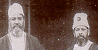

|
Section 1 || Section 2 || Section 3 || Section 4 || Sectiont 5 || Footnotes MOHAMED ALI WAS a controversial figure for his contemporaries and for posterity. Government officials associated him with the 'extreme faction of the Muslim community', the 'Advanced Party' and the 'hot-headed Nationalist Party'. (1) He led a clique of noisy and aggressive Muslims of the 'young party', who made the raja's house [Raja of Mahmudabad] their headquarters and lived and agitated at his expense. (2) He left trouble wherever he went, reported the viceroy. He persuaded some students at the Lahore Medical College to raise the tribes against the government in Afghanistan, and caused 'discontent' at Aligarh's M.A.0. College. That is why he and his brother Shaukat Ali were prevented from entering Punjab and the United Provinces (UP). (3) In recent years some historians have seen in Mohamed Ali a charmer and nothing more; a politician greedy for power, an irresponsible declaimer who drove himself and his followers from one disaster to another. He is charged with inspiring the 'young party' Muslims to manufacture issues and whip up agitations to keep their newspapers going, their organisations active and their coffers full. (4) There are other images as well: the image of an energetic, talented and charismatic figure devoted to Islamic resurgence world over. Writers in India stress Mohamed Ali's commitment to Hindu-Muslim unity, his adherence to the Congress movement, his passion for the country's freedom. (5) Scholars in Pakistan, on the other hand, eulogise his contribution 'to the march of the Muslim nation on the way to its final [++Page 14 My Life: A Fragment] destination'. (6) They romanticise the story of his life and extol his achievements, some real but mostly imaginary. Schools, colleges and streets in Karachi and Lahore are named, as in Delhi, Aligarh and Bombay, after Maulana Mohamed Ali 'Jauhar', the Rais al-Ahrar (Leader of the Free Peoples). What lends credence to such images is the tendency among sections of
the Muslim intelligentsia to construct their identity around leaders who
had the energy, drive and the skills to articulate the Muslim/Islamic
world-view from public platforms. (7)
Thus Mohamed Ali is commonly perceived to be more sensitive than others
to the predicaments of the Islamic world and more stridently committed
to its well-being. (8) He attracts
greater notice because he possessed to the full the resources of
traditional oratory-its repertoire of tricks. Few orators or political
journalists had his combination of qualities: his range of articulate
emotions, his capacity for analytical arguments, his pathos, fantasy and
wit, and his power to marshal all these towards ends clearly discerned
and passionately desired. He also had considerable poetic talent, which
combined with his fervour and the desperate situation in which Turkey
found herself after the War, to create in him a feeling of impending
martyrdom. (9) 'Such
sufferings and privations as ours,' he wrote, 'have only too often been
the lot of mankind, in all ages and climes.'
(10)
Back to the top 1
Mohamed Ali was born on 10 December 1878 in Rampur where his grandfather Sheikh Ali Baksh (1813-67) served as a petty official in the court of Nawab Mohammad Yusuf Khan. He aided the British in quelling the disturbances at Bareilly and Moradabad during the 1857 revolt, and received a khilat two years later and a muafi or a rent-free land with an annual income of 13,000 rupees. The family reaped the rewards of loyalty even after Ali Baksh's death in 1867. Abdul Ali (1848-80), his son, enjoyed the patronage of Rampur's nawab. But he died of cholera in 1880 leaving Abadi Bano Begum (1852-1924), then only 28 years of age, the responsibility of bringing up her five sons and a daughter. The begum's family, which was in direct succession to a number of nobles connected with the Mughals, had suffered during the 1857 upsurge. Her father changed his name and lived for several years as a refugee in the Rampur State territory. Much of the family's property, having been acquired through the generosity of the Mughal rulers, was confiscated by the British government. (12) Abadi Bano was undeterred by the family's limited resources and the heavy debt incurred by a spend-thrift husband. When approached by Azimuddin Khan, general of Rampur forces, she agreed to send her eldest son to Bareilly. (13) Mohamed Ali recalled: How she managed to bring up her six little children and how she, an uneducated purdah lady, as education is understood in these days, managed to educate us better than our educated and richer uncles educated their own children, is a remarkable story which it is not through egotism that I would like to relate.... This miracle was not accomplished without personal privations that would do credit to a hermit living in a cave. It is not, therefore, egotism that has suggested this tribute to a mother's memory, but the sense of a heavy debt that can never be paid off... (14) [++Page 16 My Life: A Fragment] In the graph of Mohamed Ali's life, the steep arc of youth is missing; we see only the flattened curve of maturity. We see him studying a few Persian classics, reading the Quran in Arabic, and observing the religious rituals in a Sunni home. While in Aligarh (1890-9 8), he is found writing for the college magazine, sharing Shaukat Ali's love for 'the noble and manly game of cricket,' and nursing the ambition of securing 'a nomination for the post of Subordinate Magistrate or Land Revenue Collector.' (15) The 'Big Brother' was impressed with his 'unexpected success' at the B.A. examinations and arranged for his education in England. In Mohamed Ali's own words, 'So before the proverbial nine days of wonder were over, I was on the high seas in the Indian Ocean in the teeth of a raging monsoon, bound for England.' (16) Within weeks of his arrival in September 1898, Mohamed Ali made his way into English middle class society with the help of the family of T.W. Arnold, who had taught philosophy at the Aligarh College, and its controversial Principal, Theodore Beck. Fazl-i Husain, also in England, found him to be 'a jolly good fellow, very quick in making friends'. They spent 'exceedingly pleasant evenings' discussing literary, philosophical and political issues. (17) Mohamed Ali reached Oxford on 11 October to study modern history at Lincoln College. He matriculated a year later and secured a second in 1902, missing a first in History by a narrow margin. (18) He impressed his with his vigour, common sense and resourcefulness. (19) James Williams, his guru in Roman and English Law, noticed his 'great capacity for acquiring and remembering information'. (20) His paper on Macbeth was written by 'a man of ability, capable of thinking for himself'. Yet these skills did not equip him to qualify the civil service examination, 'thanks to an English spring, and a young man's more or less foolish fancy'. (21) Success eluded him even after returning to India in 1902. Having failed to secure a teaching position at Aligarh owing to sordid manipulations, he opted for the Education Department in Rampur, a position for which [Introduction ++Page 17] his tutors in Oxford had found him suitable. But his brief and inglorious innings ended in November 1902 when he sought refuge in the princely State of Baroda. Gaekwad Sayaji Rao (1875-1936), the ruler, regarded the new recruit as one on whose shoulders he could place the burden of administrative work, the man who got papers drawn up, orders sent out, correspondence carried on and records kept. But jealous and conservative officials in Baroda, as in Rampur, resented him for his initiative, drive and his proximity to the Gaekwad. Though Mohamed Ali kept himself in the public eye by writing and speaking at conferences, he was set to leave for Bhopal by the end of 1906. (22) Dunlop Smith, private secretary to the viceroy, urged him to stay: 'I quite understand that your surroundings are not always congenial, but after all whose are in every respect.' (23) Around this time Mohamed Ali printed the Thoughts on the Present Discontent, based on articles published in the Times of India and the Indian Spectator. He sent a copy to the viceroy, hoping that it 'would meet with the sympathy and encouragement which India has learnt to associate now with the name of Edward the Peace-Maker'. The viceroy endorsed its contents and wished the book the wide circulation it deserved. (24) Mohamed Ali stayed in Baroda until 19 10, though his heart was not at rest. (25) Activity and companionship were the drugs he craved for. The drab and routine work in the Opium Department offered no solace to his buoyant and exuberant spirit. He yearned for the mehfils where he could transmit the flame of his intellectual excitement to others. 'I am fed up with this state ... [and] tired of this job', he told his Aligarh friend Syed Mahfuz Ali. (26) He was conceited about his Oxford degree and contemptuous of [++Page 18 My Life: A Fragment] those who sported degrees from Indian universities. He submitted, as he did with monotonous regularity during his internment a few years later, long representations to his superiors commending his own abilities, demanding higher allowances, and criticising those placed above him. 'In spite of being an Indian and having received a very similar education to the rest of the Baroda officials,' he complained to the Gaekwad, 'I found that I differ from them in almost everything, and that it was difficult if not impossible for me' to be received by them as one of their own. . . . (27) I Shaukat Ali, himself a civil servant in the Opium Department, felt that his younger brother had crossed the limits of discretion; he admonished him 'to curb yourself a little-you have to work with certain people and you cannot always have your way. If I was your boss, I would strongly object to your correspondence. It borders on insubordination.' (28) For the time being the prospect of a government job was held out by Dunlop Smith and Harold A. Stuart, the Home Member. But hopes were soon turned into despair, when Mohamed Ali was told that 'the expenses of an Indian private secretary would (not) be justified at present', and that his lack of experience of detective work was a bar for a post in the Home Department. (29) Michael O'Dwyer, later governor of Punjab, recommended him to the nawab of Jaora. But this small princely State could hardly assuage Mohamed Ali's thirst for participation in great events, even in a subordinate capacity. (30) A career in journalism was the only option, the only avenue through which Mohamed Ali could prove to be of 'any appreciable use to it (Muslim community), while still earning a livelihood'. (31) His journalistic ventures, beginning with the Comrade on 14 January 1911, were successful. His own articles, laced with long and tedious quotations, tended to be verbose and repetitive. Yet he created for himself a broad-based readership because he wrote, just as he spoke, with passion and fervour. The Comrade, manned by some of his friends and prot6g6s from Aligarh, grew in size; its circulation shot up to 8,500 copies. Its office in Kucha-i Chelan in the old city became a political salon after the paper moved from Calcutta to Delhi, the new capital of British India. 'No paper has so much influence with the students as the Comrade, and no individual has the authority over them [Introduction ++Page 19] which is exercised by Mohamed Ali,' reported the UP government in 1914. (32) When he wanted to stop publishing the Hamdard at the beginning of his internment, Wilayat Ali, the well-known columnist, begged him not to do so: 'I do not approve of your decision and I do not think many will.... You cannot imagine what the loss of Hamdard will mean to us--the Musalmans.' (33) Wilayat Ali recognised, as did others, that the Comrade and Hamdard contributed to a general awakening of educated Muslims who read and financially supported these newspapers. (34) The Comrade, more than the Hamdard, served to voice some of Mohamed Ali's main concerns; for example, the promotion of the Aligarh College, his Alma Mater. He wanted the college to serve as a common centre where Muslims from all over the world would congregate and energise a common Islamic consciousness to uphold Muslim interests in India and overseas. (35) Thus, his maiden speech in 1908 on the subject, modelled on the style of Edmund Burke and with quotations from Latin, Arabic, Persian, Urdu and English literature, proved to be the swan song of the first phase of the Muslim University movement. (36) Mohamed Ali supported-some said fomented-a students' strike in 1907. His involvement in college affairs, a story detailed by David Lelyveld, Gail Minault and Francis Robinson, made him the bete noire of the board of trustees. The British staff complained to the English novelist E.M. Forster, then visiting India, that they were neither 'trusted to give the help they had hoped nor could they make some way with the students-not much, owing to the influence of the Comrade, a forward Islamic newspaper'. The Muslims 'had an air of desperation, which may be habitual, but was impressive'. (37) The college was transformed into a hot-bed of 'sedition'; [++Page 20 My Life: A Fragment] officials wondered if anything could be done to prevent its students from 'being tampered with' by Mohamed Ali who, for all his professions of loyalty, was 'a dangerous malcontent', 'an element of strife'. (38) Back to the top 2
Historians have traced the break-up of the Anglo-Muslim entente cordiale, the growth of political radicalism among some Muslims, and their stridency in areas where colonial policies disturbed the status quo most. Some have examined how the anti-Muslim bias of UP's LieutenantGovernor Anthony Macdonnell, the reunification of Bengal (1911), the rejection of the Muslim University scheme (1912), and the fracas over the Kanpur mosque (1913) convinced a number of educated Muslims that radical self-help was a better solution than mendicancy. Much secondary literature also delineates the role of the men of Nai Raushni and the representatives of 'new ideals' and a 'new force', many of whom endorsed the Congress policies and programme. Mohamed Ali emerged as the rallying point for such 'younger men', for he himself held the opinion that the Congress, then dominated by the 'moderates', embodied the genuine and vigorous aspirations which move educated India for a well-organized and common national life'. (40) He emphasised, as did Maulana Abul Kalam Azad with greater rigour and consistency, the need for Hindu-Muslim amity and understanding. Without mutual cooperation Hindus and Muslims would 'not only fail but fail ignominiously'. He talked of a 'concordat like that of Canada' and 'a marriage de convenance [sic], honourably contracted and honourably maintained'. (41) In another article-- 'The Communal Patriot'--he maintained that the two communities, despite their differences, should be mutually tolerant and respectful, and that eventually education and the 'levelling, liberalising tendencies of the [Introduction ++Page 21] times' would create political individuality out of diverse creeds and races. He compared the Congress and the Muslim League to two trees growing on either side of a road: Their trunks stood apart, but their roots were fixed in the same soil, drawing nourishment from the same source. The branches were bound to meet when the stems had reached full stature.... The soil was British, the nutriment was common patriotism, the trunks were the two political bodies, a nd the road was the highway of peaceful progress. (42) Such views, which were being aired in many quarters, gained wide acceptance. Still, Mohamed Ali's fame spread far and wide only after he and Shaukat Ali were gaoled on 15 May 1915 for an article entitled 'The Choice of the Turks.' (43) On that day thousands congregated to offer their Friday prayers at Delhi's Juma Masjid and 'to bid adieu to the two patriots who had done all they could to promote their cause'. (44) They were first interned at Mehrauli, then transferred to Lansdowne and, finally, to Chhindwara where they arrived on 23 November 1915 wearing 'grey astrakhan cap with large Turkish half moons in the front, also Khuddami Kaba badges'. Located 'a considerable distance from their friends' and 'far removed from centres of Muhammadan feeling', Chhindwara was chosen because 'pan-Islamism is faintest' and 'the journey there from the United Provinces as regards visitors is exceedingly tedious'. (45) The Ali brothers were
well on their way towards martyrdom, with various organisations
vying with each other to record their 'noble services rendered at the most psychological moment
in the history of the community'. Their fame was kept fresh through many protest meetings, and
also through the incident, covered by the historians Gail Minault and B.R. Nanda, of the
government's conditional offer of their release in 1917. They refused to sign the undertaking
suggested by the government; instead
[++Page 22 My Life: A Fragment]
they signed another, adding the
qualification: 'Without prejudice to our allegiance to Islam'.
Leading Congressmen, especially Gandhi, also courted them and pressed for their release. The
Mahatma, having met the Ali brothers in Aligarh and Delhi in 1915 and early in 1916, assured Bi
Amman--'Mataji'--that he was 'leaving no stone unturned' to secure their immediate and
honourable release .
(46) Having made Hindu-Muslim unity an essential part of his mission in India
since his return from Africa in 1915, Gandhi assumed that Mohamed Ali was an ideal instrument
in his hand for creating Hindu-Muslim alliance with the aim of obtaining Swaraj. He was valuable
to the Mahatma both as an issue on which to cement a communal concordat, and also because he
considered him to be a splendid example of that mingling of Hindu and Muslim cultures which had
taken place in the Indo-Gangetic belt. (47)
His interest in Mohamed Ali's release was 'quite selfish': (48)
'We have a common goal, and I want to utilise your services to the uttermost in order to reach
that goal. In the proper solution of the Mohammedan question lies the realisation of Swaraj'
(49)
Gandhi's initiatives made him
popular among north India's Muslims, many of whom
participated in the hartal organised on 6 April 1919 against the Rowlatt Bills. M.A. Ansari
extolled him as the 'intrepid leader of India ... who has ... endeared him as much to the Musalman
as to the Hindu'. Mohamed Ali's younger colleagues, who regarded the Mahatma as a 'Tolstoy
and Buddha combined', endorsed his non-violent programme. Satyagraha, according to Maulana
Abdul Bari, the renowned alim of Lucknow's Firangi Mahal, was consistent with the Islamic
principles. (50) In many parts of the country '
Gandhi', 'Khilafat', 'Swaraj', 'Mohamed Ali' were
words that conjured up in the minds of the people a picture of bringing about a better world under
the direction of better leaders. (51)
[Introduction ++Page 23]
Around this time the portrayal of
Mohamed Ali as a fiery and relentless anti-colonial
crusader was based on the strength of his involvement in nationalist as well as pan-Islamic causes.
This image is sustained in much secondary literature published in India and Pakistan. In reality,
however, Mohamed Ali's utterances on the Raj and his frequent references to the good that was
to accrue from the 'beneficent contact' with Western culture and civilisation explode the myth of
his consistent hostility to the colonial government. Notice, for example, how he assured Meston,
whose advice he followed in shifting the Comrade from Calcutta to Delhi, of his 'anxious desire'
to co-operate with him and other well-wishers of his country and
community, (52) and pleaded, on
another occasion, for 'some pegs' on which to hang his moderate stance on the annulment of
Bengal's partition. He insisted that 'well-merited concessions wisely made at a suitable moment'
would curb an agitation far more effectively than the strenuous efforts of
Muslim leaders. (53) He
even suggested that the presence of the British monarch in India should be utilised to bind still
more firmly the seventy million Muslims of India to the Empire. No wonder, high-ranking British
officers subscribed to the Comrade when it began publication
in Calcutta. (54) No wonder, the
viceroy Hardinge allowed Mohamed Ali to collect and advance a loan to Turkey, patronised the
Delhi Crescent Society and supported Ansari's medical mission to Constantinople. (55)
Even when officials
rebuffed Mohamed Ali in London during his stay from September to I
December 1913, he declared his loyalty and appreciated the manifold blessings of British rule in
India. (56) When the War with Germany
broke out, he was on the side of the British, urging India's
Muslims to place their services at the disposal of the government. The article 'The Choice of the
Turks' proclaimed the hope that the Khalifa would stay out of the War and save his Muslim
countrymen from a conflict of loyalties. Talking to Abdul Majid, the C.I.D. officer, Mohamed Ali
defined his position thus:
His quarrel (Abdul Majid recorded)
was not at all with the British Government. He was certainly
not so advanced as Messrs. Mazharul Haq, M.A. Jinnah and Lajpat Rai. He believed that is was
necessary for Muhammedans that the British Government should and would remain in India much
longer than the nationalists
[++Page 24 My Life: A Fragment]
desired....
The Government did not know its real enemies. They will receive in audience LaJpat Rai and
other nationalists.... but they would consider Mohamed Ali as their enemy. (57)
Mohamed Ali's antipathy
towards Pax Brittanica may well have developed during his trip
to Europe in 1913, though it was still not explicitly articulated. Meeting writers, journalists and
civil servants enabled him to see Turkey from the outside, to observe the strife of the peninsula
magnified into the terms of international politics, to watch and appraise the forces remoulding,
sometimes deliberately, sometimes almost casually, the destiny of the Ottoman Empire. His
exchanges convinced him, perhaps for the first time in his public career, that the British were
insensitive to Muslim feelings over the Khilafat, and their ignorance of conditions back home was
'driving them fast to the brink of the precipice'. Hence his indignation at being denied access to
senior officials of the Indian House. 'If we are unable to see even His Lordship,'Mohamed Ali
told John Morley, 'what could we say to our people on our return except that because 'some local
officials were desirous that we and our coreligionists and many others in our country should be
misjudged by our superiors.' (58) Furious at the
lack of sensitivity, he was drawn into a kind of
egoisme a deux in defying their stuffiness. He commented that the government, having taken
Muslim loyalty and support for granted, undermined the temporal power of Islam with scant
regard for Muslim religious susceptibilities.
(59)
Mohamed Ali's internment was
the last proverbial straw; Ziauddin Ahmad Barni (d.
1968), a sub-editor of Hamdard, traced his mentor's anti-government s
tance to his confinement in
Chhindwara. (60) From here, as also from
Lansdowne and Betul, Mohamed Ali expounded on the
government's repressive measures, targeting the Indian Civil Service in particular, 'a political
party perpetually in office (with) the power to crush its political opponents with all the resources
of the State'. (61) He told Delhi's Chief Commissioner,
Malcolm Hailey, that he understood 'how
hateful must be a man of my character to officials of a certain type'. He recognised the
implications of the Defence of India Act, 'which makes even the Archangel Gabriel liable to
internment by local governments on the secret
[Introduction ++Page 25]
testimony of Beelzebub'.
(62) In June 1915, he announced that
the law under which he was interned
was 'tyrannous and unjust'. (63) No government
was expected in the twentieth century to claim,
even by implication, the right to force a man's conscience. He dwelt on 'the spirit of tyranny', the
'gag of prodigious proportions' prepared 'for silencing more than three hundred million of God's
articulate creatures'. The Rowlatt Act 'has ended the reign of law, and substituted a reign of
terror in its place'. (64) As a symbol of his protest,
Mohamed Ali began to wear half-moons in his
grey cap and Khuddam-i Kaaba badge, compared with his European style of dress in previous
years.
The enforced leisure made
Mohamed Ali more profoundly religious, enabling him to steep
himself afresh in his Islamic heritage and to turn to the study of Islam--charting out an unfamiliar
subject, getting at its rudiments, and exploring its nuances. In My Life, a document of deep
religious feelings, he laments not having had access to the traditional Muslim learning. 'It is not
without a feeling of deep shame that I have to confess, we boys and girls born and bred in Muslim
households were taught far less of our religion than most English boys and girls of our age and
position.' He bemoaned that Aligarh 'furnished' students with 'little equipment in the matter of
knowledge of faith'. Though he attended Shibli's lectures and referred to the elation of sitting in
the Principal's Hall attending his lectures with all the dignity of a quasi-'Undergrad', the Quran
practically remained a closed book, and the traditions of the Prophet was no more than a name. In
the seclusion of his internment at Mehrauli, however, he studied Maulvi Nazir Ahmad's
translation of the Quran and found 'the consolation and contentment that was denied to us outside
its pages'. (65) He discovered, after
years of ignorance of his Islamic heritage, that the Quran was a
'perennial of truth' and offered a 'complete scheme of life, a perfect code of conduct and a
comprehensive social policy.' Thus the main tenets of Islam, which were earlier 'little more than a
bundle of doctrines and commandments', acquired 'a new coherence and, as it were, fell suddenly
into place, creating an effect of units such as I had never realised before'. Tauhid grew upon him
as a personal reality, man in the dignity of his 'service' as vicegerent of God, and himself as part
of
[++Page 26 My Life: A Fragement]
this great strength. This was
Mohamed Ali's 'unique discovery in that small volume revealed
some thirteen centuries ago to an Arab of the desert whose name I bore.'
(66)
Mohamed Ali read the
Sihah-i Sittah, a compilation of the Prophet's Traditions (Hadith),
the works of Imam Ghazzali, T.W. Arnold, Shibli Nomani, the person who made the symbols of
Islam a living reality for the Aligarh students, and the poems of Jalaluddin Rumi and Mohammad
Iqbal. He experienced 'an exquisite thrill of delight' reading Asrar-i Khudi (Secrets of Self),
especially because its author Iqbal expressed 'the same basic truth of Islam, which I had in a
blundering sort of way discovered for myself'. (67)
Studying Islamic history enabled him to see its
great men as figures to whom he could talk, and its crises as guides to
action in current affairs. (68)
Studying Islam was conventional enough for men like Syed Ahmad Khan, Shibli and Azad who
did so with greater scholarship, but none with a greater personal need. Mohamed Ali recollected:
'Since I first commenced the study of the Quran I have read a fair amount about Islam from the
point of view of Muslims and also of their critics; but nothing that I have read has altered the
significance of Islam for me to which I had stumbled in the first few months of our internment
eight years ago (emphasis added)'.
(69) To Gandhi, he wrote:
Whatever
else my internment may or may not have done, it has I believe set the soul free, and that
compensates me for so many items on the wrong side of the account. What I could dimly perceive before I
now realise with distinctness, and it is this, that the whole aim and end of life is to serve God and obey His
commandments.... I confess I had never before grasped this truth in all its fullness....
Internment made us
seek refuge in the Holy Quran, andfor thefirst time, I have to confess it, I read it through and with new
eyes (emphasis added). (70)
This experience was,
in some ways, similar to that of Azad whose three-and-a-half year
internment in Ranchi (Bihar) kindled his Islam into warmth and fervour. He began writing the
Tarjuman al-Quran with his commentary on the opening
Surah Fatihah, and its themes-Divine
Providence, benevolence, justice, unity and guidance, rabubiyah, rahma, adala, tauhid and
hidaya. Both Azad and Mohamed Ali
asserted the transcendental truth of Islam, 'a way of life, a
moral code and social polity', a complete set of rules (canaan-i falah), as Azad put it. Both
believed in the rightness of the Islamic ideals-a complete way of life for an organised community
living out Allah's plan under the kind of government which had prevailed in the days of the
Prophet. Both held the Islamic principles to be compatible with reason or science. Mohamed Ali
underlined this point in 'The Future of Islam', and Azad in the first three issues of Al-Hilal.
In Mohamed Ali's view there was just
one world of Islam regardless of caste, class,
linguistic and regional variations, one vast brotherhood stretching across the continents. This was
summed up by the Comrade on 18 January 1916.
It is
not only one God, one Prophet and one Kaaba that the Muslims of the world have in common, but in
every degree of longitude and latitude they hold the same views of the relations of husband and wife, of
parent and child, of master and slave and of neighbour and neighbour.... They follow among A races the
same laws of marriage, divorce and succession. And they do this in the twentieth century of the Christian
era exactly as they did in the sixth and hope to do so to the last syllable of recorded time.... There is still the
one God to worship and the one Prophet to follow ... always one unaltered and unalterable Book to soothe
and to stimulate, and the one Kaaba to act as the magnetic pole for all true believers from all points of the
compass.
In this way Mohamed Ali
underlined the primacy of religious loyalty, arguing that Muslims
have had a pre-eminent sense of community in their Weltanschauung, and especially so in India,
where their adherence to Islam made them unique and gave them their 'communal consciousness'.
'I have a culture, a polity, an outlook on life-a complete synthesis which is Islam', he stated in his
magisterial style at the London Round Table Conference in 1930. 'Where God commands', he
added, 'I am a Muslim first, a Muslim second, a Muslim last, and nothing but a Muslim. If you ask
me to enter into your Empire or into your nation by leaving that synthesis, that polity, that culture,
that ethics, I will not do it.' (71) He did not believe
that by being a Muslim he was any less an Indian.
His religious beliefs and nationality never appeared to him to be incompatible. He could--and
must--be true to both Islam and India. He explained thus: 'Where India is concerned, where
India's freedom is concerned, where the welfare of India is concerned, I am an Indian first, and
Indian second,
[++Page 28 My Life: A Fragment]
an Indian last, and nothing but an Indian.' On another occasion he spelt out his position in the
following words:
I am a
Muslim first and everything else afterwards. As a Muslim, I must be free and subject to no autocrat who
demands from me obedience to his orders in defence of those of God.... Faith is my motive of conduct in every
act ... and my faith demands freedom. That Swaraj will give me, but it does not demand the subjugation of the
Hindu or any one else differing from me in faith.... My own freedom and not the enslavement of any other is
my creed. (72)
In sum, Mohamed Ali's earlier activities had been directed by communal loyalty', but his
motivation after his religious experience was Islamic duty. This is not to suggest that he held his
community in any lesser esteem or that its mundane welfare was less important to him. On the
contrary, his awakening confirmed the rightness of what he had done in the past and made it
necessary for him to intensify his endeavours along similar lines.
(73)
Back to the top
3
Mohamed Ali's emotional disposition
in religious matters had much to do with the nature and
with the promptness of his response to events in Turkey. In this context his concerns cannot be
doubted: the opinion that it was all feigned or that he was simply playing the pan-Islamic role
cannot be defended. He passionately believed that the basis of Islamic sympathy was not a
common domicile or common parentage but a shared outlook on life and culture, and that the
Khilafat stood as 'the embodiment of that culture'. He endorsed Azad's description of a 'political
centre' (siyasi markaz), and designated the Khalifa as the 'personal centre' of Islam and the
Jazirat al-Arab as its 'local centre'. For these reasons
Mohamed Ali warned the government that,
[Introduction ++Page 29]
there should be no
attempt to remove, whether directly or indirectly, from the independent,
indivisible and inalienable sovereignty of the Khalifa, who is the recognised servant of the Holy
Places and warden of the Holy Shrines, any portion of the territories in which such Holy Places
and shrines are situated. . . . Nor should there he any such attempt to dismember and parcel out
even among Muslim Governments, or in any other manner weaken the Khalifa's Empire with the
object of weakening the temporal power of Islam, and thereby make it liable to suffer, without
adequate power to prevent, the curtailment of its spiritual influence through the temporal power
of other creeds. (75)
Again, he stated in London:
Well, so
long as there are your Bryces and your 'Big Sticks', we, too must have some sort of stick for the
defence of our faith.... If you think you can please the Muslims of India by allowing the Turks to retain
Constantinople in such a way that the Khalifa is worst than the Pope ... for he would in fact be the prisoner of
people of an alien race and faith, then, ladies and gentlemen, you know very little of Islam and the Muslims,
or of India and the Indians. (Cheers) That affront shall never be tolerated, and if you think you can make out
that all this 'agitation' is 'fictitious' and 'factitious', then you will be compelling the Indian Muslim soldiery
to disprove this lie in a manner that will be far too unambiguous for your tastes or for ours. Beware, beware.
(76)
Mohamed Ali envisioned a renascent
Islamic world in which all Muslim peoples were united in a
strong Islamic world-'the super-natural Sangathan of Muslims in Five Continents'-built around
the Khalifa and supporting each other through that institution whenever Muslim security was
threatened. (77) The new Khalifa, judged from
his views at the Mecca Conference in 1928, was to be
based on a democratic, elective rather than a dynastic institution like the Khilafat-i Rashida. And
the person chosen would be virtuous and faithful to Islam. The Muslims of the world would direct
the government and be responsible for its welfare, while their brethren in India-the largest single
community-would lead the fight to emancipate Islam. (78)
Mohamed Ali infused vigour into
the Central Khilafat Committee and
[++Page 30 My Life: A Fragment]
its provincial and local
units to realise the ideal of a renascent Islam. The Hamdard was started on
13 June 1913 for the Urdu readers. The Ali brothers travelled widely, delivered lectures,
organised mass meetings and galvanised the ulama at the Dar al-ulum, in Deoband, the Firangi
Mahal and the Nadwat al-ulama in Lucknow. In fact, the ulama were conscious that they must
now be active in addressing themselves to the political, social and religious
anxieties of fellow-Muslims, or else see true Islam as they understood it, and their own claims to guide them go by
default. This led some of them 'to pocket their pride and in a way even accept the lead of men
whom they had but a generation ago finally consigned to perdiction'. The orthodox and the
anglicised 'were drawn together and as in a flash of lightning, saw that after all they were not so
unlike each other as they had imagined'.
(79) Once more,
Ali remarked:
Muslim society in India
presented a level of uniforinity and the bitterest opponents of a generation
ago stood shoulder to shoulder... If even a decade previously anyone had ventured to foretell such
a result, he would have been laughed at for such a fantastic prophesy. . . .
(80)
The annulment of
Bengal's partition, the Turko-Italian War, the Kanpur mosque affair and
the rejection of the Muslim University scheme added thrust to the converging courses in politics
of the modern and the traditionally-educated. The 'temporal misfortunes' of Islam had such a
profound impact that 'the wedge that Western education had seemed to insert between the ranks
of the religious, and of the men of the "New Light" vanished as if by magic.'A general levelling
took place 'without any dependence on the use of force or external authority'.
(81)
Mohamed Ali played a
pivotal role in strengthening these ties after his release on 28
December 1919. The 'disseminator(s) of mischief and would be traitors' reached Amritsar where,
in keeping with the practice that had developed during the War years, the Congress and the
Muslim League held simultaneous meetings. He had been imprisoned, Mohamed Ali told the
Congress, for denouncing the injustices perpetrated on India and on Islam by the British, and now
he must denounce them still, even if it meant returning to prison. At the Muslim League meeting,
he expressed his readiness to sacrifice everything he had, including his life, for the sake of Allah
and Islam. He made clear that Muslims were subjects of Allah and not of Great Britain. He
echoed similar views in London as a member of the Khilafat delegation.
[Introduction ++Page 31]
The delegation, having arrived in
England at the end of February 1920 for six months,
maintained an exhausting pace, spurred on by Mohamed Ali. He was the debonair gentleman,
perfectly dressed, dispensing political wisdom, epigrams, jokes and anecdotes to representative
audiences, impressing everyone except the British newspapers and Lloyd George--the man who
mattered. (82) He lived well 'in a nice flat with
heaps of good food, taxis to go about,' (83) set up
meetings with British leaders, spoke at length to various bodies and organised the publication of
the Moslem Outlook in England and the Echo de l'Islam in Paris.
Mohamed Ali returned to
Bombay on 4 October 1920, nearly a month after the Calcutta
Congress adopted the non-cooperation resolution. His advice was that Muslims must plunge into
the campaign with their non-Muslim brethren to achieve the Khilafat aims. Words were soon
translated into deeds. He redoubled his efforts, along with Gandhi, Azad and Ansari, to induce the
trustees of the Aligarh College to give up the government grant-in-aid. When the demand was
rejected, quite a few students set up a break-away national university. This is how the Jamia Millia
Islamia was founded.
To begin with, Mohamed Ali
devoted some time to giving the Jamia a solid Islamic
footing. He revived Shibli's discourses on the Quran and ensured that 'our day began with a full
hour devoted to the rapid exegesis of the Quran'. But he was a man on the move and his project
in life extended far beyond the confines of a campus. Jamia was too small and too quiet a place for
someone accustomed to the humdrum of national politics and one who enjoyed being at the centre
of every major event. (84) Predictably enough,
he abandoned an institution he had himself founded,
and headed for Nagpur to address the Congress, Muslim League and the Khilafat meetings.
Mohamed Ali was among
the busiest men in India, speaking before crowds and local
committees and galvanising support for the non-cooperation programme. He travelled to eastern
and western India from January to February 192 1. His presence at the Erode session of the
Majlis-
[++Page 32 My Life: A Fragment]
ul Ulama in March heightened
the Khilafat euphoria, as did his presence in April at Madras where
he attracted large crowds of Hindus and Muslims. His fiery speech at Erode nearly got him into
trouble again; an apology and an assurance that violence in every form would be eschewed led the
government to withdraw the prosecution. From April to August, he spoke in Meerut (9 April),
Bulandshahr (12 April), Lucknow (I May and 7 August), Moradabad (26 July and 6 August),
Pilibhit, Sitapur (7 August), and Allahabad (10 August). He was joined by his mother who threw
off the veil, appeared before the public and began addressing vast audiences. Her journeys
brought hundreds of thousands of rupees to the Khilafat fund. The whole of India was astir. A
popular song of the era reflected the spirit:
During this tumultuous
period, Mohamed Ali's relationship with Gandhi, with whom he
had so little in common, was ambivalent. He was undoubtedly moved by the Mahatma's interest in
his release and the Khilafat cause, but he was uncomfortable with his world-view and could not
grasp the significance of his political message. His own goals were limited to promoting
pan-Islamism. As a result, it was not easy for him to make sense of the Mahatma's vision of a new
social and moral order. Gandhi, however, hoped that 'on seeing the success of my experiment in
non-violence, (they) will come to realise its excellence and beauty later on'. In May 1920, he
referred to a distinct understanding with them that violence would not be
allowed to go on side-by-side with non-violence. (85)
Mohamed Ali confirmed in December 1923 that he would not use
force even if it was required for self-defence. (86)
Mohamed Ali did not press
his own viewpoint because he needed Gandhi's support. In
fact, he and other Khilafat leaders chose the path of non-violent non-cooperation to 'secure the
interests of their country and their faith'. From Paris, he wrote: 'I only wish that I had a Musheer
(advisor) here, and if possible Fazlul Haq, though of course the best man to have is Gandhiji
himself.' (87) When he was accused of being a
Gandhiphile, he replied: 'I cannot find in any
community-Jewish, Christian or any other a man who has as noble a character as Mahatma
Gandhi. My pir and murshid is Abdul Bari whom I greatly respect. Yet I
[Introduction ++Page 33]
can say that I have not found
anyone superior to Mahatma Gandhi.' (88) 'After the Prophet, on
whom be peace,' he said, 'I consider it my duty to carry out the commands of Gandhiji.'
(89)
While Mohamed Ali was
reaffirming his loyalty to Gandhi, the Khilafat Conference at
Karachi declared that serving in the army or police was haram for the Muslims. The expected
happened. Mohamed Ali, the Chairman, was arrested two months later. On 26 October 1922
began the trial where he made the famous statement: 'The trial is not "Mohamed Ali and six
others versus the Crown", but "God versus man".
The case was therefore between God and man.
The whole question was "Shall God dominate over man or shall man dominate over God?".' The
jury listened to his rousing speech, but was not impressed. He and five other Muslim leaders were
sentenced to two years' rigorous imprisonment on 1 November.
Back to the top
4
Mohamed Ali was
released on 29 August 1923, and in his first public address spoke of his gloom at
finding on his shoulders the burden of freeing Islam and India. He said that he came out 'from a
smaller prison to a large one', and that every executive member of the Congress must sign a pledge
of readiness to sacrifice life itself for independence. Non-cooperation was still the main plank of his
politics: 'If cooperation was haram according to the Islamic law two years ago, it cannot become
halal today.' (91) He criticised the
Swaraj Party and its leader, Motilal Nehru, for starting chamber
practice in defiance of the Congress decision to boycott British law courts.
(92) But three weeks later
he himself proposed
[++Page 34 My Life: A Fragment]
the compromise resolution
at the Delhi Congress, permitting 'such Congressmen as have no religious
or other conscientious objections against entering the legislatures ... to stand as candidates', and
calling for 'united endeavours to achieve Swaraj at the earliest moment'. He was concerned, as he
wrote to Jawaharlal Nehru who was induced to accept the Congress secretaryship in Mohamed Ali's
year of presidentship, (93)
to resolve the differences and unite the Congress factions. Appealing for unity,
he stated:
Let the
Provincial Congress [UP] assembly send for the sacred soil of Kashi itself the message of the greater
and more solid
sangathan, the
sangathan of the National Congress. And let us go forth from this Conference
truly shuddh, purged of all narrowness, bigotry and intolerance in order to free our country from the most
cramping slavery-the slavery not only of the body but also of the soul.... If there is anything of the old world
spirituality in Kashi, let us recommence the work of our great chief, Gandhiji, in the spirit of religious devotion
and utter unworldiness. (94)
Whatever the reasons,
Mohamed Ali's teaming up with the Swarjists enraged the ulama,
whosefativa against council entry was repudiated by one of their own spokesman.
The 'no-changers', too, accused their idol of betraying the Mahatma's heritage. The front-rank communist
leader, M.N. Roy, summed up his resentment:
Much was
expected of Mohamed Ali.. . . The hope had been dashed to the ground. The idol showed its clay
feet in such a hurry that the admirers were staggered. Mohamed Ali has failed to give the leadership which was
expected of him. His pronouncements since he came out of jail are full of mere platitudes and hopeless
contradictions. No constructive programme, no positive suggestion as to the future of the movement is to be
found in them. He authorises the removal of the ban on the councils, but holds up the edict of the ulemas [sic]
on the question. He professes to be the standard-bearer of pure Gandhism, but sets his face positively against
civil disobedience, without which the political programme of non-cooperation becomes meaningless. He
indulges in fearful threats against the government, but finds the demand for the separation from the British
empire 'childish and petulant'. He deplores the Hindu-Moslem feuds, but still insists on Khilafat propaganda,
which contributed not a little to the success of the enemies of national freedom in
[Introduction ++Page 35]
creating communal
dissensions.... In political questions, he has absolutely no programme to suggest. He harps
on the threadbare 'constructive programme' which constructs naught but inaction. Such is the record with
which Mohamed Ali goes to Kakinada to furnish the nationalist forces with a new direction. (95)
The main tenor of
Mohamed Ali's address at Kakinada was that Hindu-Muslim unity was
still necessary if Indians hoped to realise their aims. Similarly, non-cooperation was not outmoded
even if one were to grant (only for the sake of argument) that it had failed. He also spoke of his
long-standing dream of a 'Federation of Faiths', a 'United Faiths of India'. India's millions were
so divided in communities and sects that providence had created for the country the mission to
solve a unique problem and work out a new synthesis, which was nothing less than a 'Federation
of Faiths'. The synthesis was to be of a federal type, for the lines of cleavage were too deep to
allow for any other sort of union. He added:
For more than twenty years I have
dreamed the dream of a federation, grander, nobler and infinitely more
spiritual than the United States of America, and today when many a political Cassandra prophesies a return
to the bad old days of HinduMuslim dissensions, I still dream of 'United Faiths of India'. It was in order to
translate this dream into reality that I had launched my weekly newspaper, and had significantly called it
the Comrade-Comrade of all and partisan of none. (96)
The motives for Muslim efforts towards achieving Swaraj were dual. They aimed at
freeing India and freeing Islam. The relationship between Indians and the Turks was in the nature
of a compact between countries oppressed by the same imperialism. Once India was free and her
forces could not be driven to fight against the Turks, the two countries would be safe. Mohamed
Ali's contention was that the Turks would have fought for the freedom of their co-religionists,
including Indian Muslims, and hence India, if they had not been so weakened. His lack of realism
in assessing the Turkish aims did not stop here. He pictured them fighting for an ideal Khalifa,
even though the Kemalist revolution was already well on course. He believed that once the Turks
were free from their 'distractions', they would revive the glories of the Umayyads or Abbasids
and the pristine purity of the Khilafat-i Rashida.
Mohamed Ali's elevation to the Congress presidentship helped to legitimise his position in
nationalist circles. But within months of his exhortations at Kakinada, he began drifting away from
the Congress, or,
[++Page 36 My Life: A Fragment]
perhaps, as he would have put it, the Congress drifted away from him. This had a great deal to do
with worsening Hindu-Muslim relations and the feeling in some Muslim circles that the Congress
was aiding the communal forces in order to establish 'Hindu Raj'. Mohamed Ali developed a
point of view from which everything said or done by any Hindu was linked to the Hindu
Mahasabha's influence. He saw 'the evil hand of the Hindu Mahasabha everywhere and its tainted
mark on every forehead'. Indeed, his 'new mentality' recognised only two divisions in India,
Hindu and Muslim, and not nationalist and reactionary or non-cooperating.
(97) Commenting on
Mohamed Ali's new stance, Nehru could not understand,
how a Hindu or a Moslem can have any
political or economic rights as Hindu or Moslem. And I cannot
conceive why Moslems or Sikhs or Hindus should lay stress on any such rights. No minority should be unjustly
treated. But Maulana Mohamed Ali is well aware that minorities get on well enough as a rule. It is the great
majority which requires protection. A handful of foreigners rule India and exploit her millions. A handful of
India's rich men exploit her vast peasantry and her workers. It is this great majority of the exploited that
demands justice and is likely to have it sooner than many people imagine. I wish Maulana Mohamed Ali would
become a champion of this majority and demand political and economic rights for them. But this majority does
not consist of Hindus only or Moslems only or Sikhs only. It consists of Hindus and Moslems and Sikhs and
others. And if he works for this majority, I am sure he will come to the conclusion that he need attach little
importance to the imaginary fights of individuals or groups based on adherence to a religious creed.
Mohamed Ali's main grievance, however, was that Gandhi, whom he had only just described
as 'the most Christ-like man of our times', gave a free hand to the 'Lala-Malaviya gang' to pursue
the goal of a Hindu Rashtra. The Congress, according to him, was not a national but a Hindu party,
unprepared to condemn Hindu fanatics, and unprepared to work towards the creation of a secular
society. Gandhi, with whom he worked for ten years through thick and thin, was keen to retain his
popularity with the 'Hindus' and, for this reason, reluctant to resolve the Hindu-Muslim deadlock.
Mohamed Ali's anxieties were heightened by the growing fissures in the Hindu-Muslim alliance in
Bengal and Punjab and the rapid progress of the Arya Samaj, the Hindu Mahasabha, and the shuddhi
and sangathan movements. Commenting on the Delhi riot of
[Introduction ++Page 37]
July 1924 specifically, and on the deteriorating communal situation generally, he wrote: 'And pray
Mahatmaji forgive a pang of sorrow, the cry of a well-nigh broken heart, the credit of it all goes, in
the first instance, to the misguided spirit of the sangathan movement, and the superfluous boasting
of the shuddhi leaders.... I feel sick, positively sick of it all.'
(98) At the same time, the 'pseudo-nationalists',
he wrote in the Comrade on 17 July 1924,
talk and write as nationalists and run down communals [sic];
but only in the use of counters and catchwords
of nationalism are they nationalists for their hearts are narrow and they can conceive of no future for India
except it he one of Hindu dominance and the existence of the Musalmans as a minority living on the sufferance
of the Hindu majority, forgetting that such ill-concealed dreams can have but one interpretation, the existence
of the Hindu' majority itself on the sufferance of the British masters of India. It is my sad conviction that not
one of these pseudo-nationalists would have talked so glibly of nationalism, majority rule and mixed electorates,
if his own community had not been in the safe position of an overwhelming majority. It is they who are real
culprits as narrow communalists, but since the position of their community is safe enough they mouth all the
fine phrases of nationalism and parade themselves as nationalists. The Cow question provides the best topic
for the exposure of their pseudo-nationalism, for in the name of nationalism they make
demands on their fellow-countrymen so absurd that none has ever heard of them in any
other country or nation in the world, and it is
time that their nationalism was fully exposed.
The publication of the Nehru report in August 1928 set in motion the avalanche of Mohamed
Ali's eloquence against Gandhi and the Congress. Soon after returning to India from Europe in
October, he stated that the provision of dominion status in the Nehru report was 'inconsistent with
the independent spirit of Islam'. Its implication was that the creation was God's, the country was the
viceroy's or of the parliament's and the rule was Hindu Mahasabha's.
(99) 'Today', he announced on
25 December 1928, 'Mahatma Gandhi and Sir Ali Imam would be sitting under our flag and over
them would fly the flag of the Union Jack. The Nehru report in its preamble has admitted the bondage
of servitude.' He was outraged that
[++Page 38 My Life: A Fragment]
Muslim representation in the central legislature was fixed at 25
and not 33 per cent, while separate
electorates and weightages were done away with. (100)
In his view, separate electorates guaranteed that
a small minority was not swamped by an overwhelming majority, while weightages ensured that this
majority would not establish 'a legalised tyranny of numbers'. (101)
Such views mostly mirrored the fears of government servants and landowners who, having
gained political leverage through separate electorates and government nomination, faced the cheerless
prospect of being eased out of legislative bodies. Equally, these groups were alarmed by the proposal
for adult suffrage. The enfranchisement of over fifteen million voters, mainly tenants, was certain to
lead to the ouster of, for example, the landlords from the general constituencies. Not surprisingly,
they resisted all forms of provincial advance if their interests were not safeguarded and insisted,
moreover, on having separate electorates, weightages, and 'effective' Muslim representation on
autonomous institutions created by the legislatures.
Mohamed Ali, now identified with such elements, did his best to turn the tables against -his
detractors. The first opportunity arose on 21 December. The Ali brothers, in league with some others,
disrupted a meeting which was tilted in favour of the Nehru report. When they employed similar
tactics elsewhere, several delegates resigned and decided to boycott the forthcoming All India
Khilafat Conference that was to be chaired by Mohamed Ali. A few days later Mohamed Ali tried his
luck at the All-Parties Muslim Conference in Delhi. He did not need to stifle opposition, for this
assembly of loyalists was already converted to the idea that the Nehru report jettisoned their interests.
Mohamed Ali's presence at the Delhi's conference was described as
'a tragedy of Indian public life'. The Servants of India
commented: 'One's heart sinks at the thought
that the Ali brothers should have been among the staunchest supporters
of the conference. (102)' Ansari,
once his comrade-in-arms, was anguished to find him in the company of the 'Aga Khan and Co.'. He
wrote:
Ever since the Lucknow Convention many
of us have been making ceaseless efforts to come to an
understanding with the Ali brothers and their friends....
[Introduction ++Page 39]
They gradually but surely went on receding
from us until at last they found themselves in the company of the
Aga Khan and Sir Mohammad Shafi in January last. The willingness with which they associated themselves
with people whose only distinction is that they have always been reactionary in regard both to Indian and
Muslim affairs was surprising.... Indeed the differences that in their origin concerned a few provisions of the
Nehru Report have now grown into a conflict of the very outlook. This to my mind explained why the Ali
brothers are adopting an irreconcilable attitude although they know very well that they are thereby
strengthening the government as well as the communalists, both Hindu and Muslim. (103)
A striking feature of the All-Parties Muslim Conference was that Mohamed Ali sat beside
Mohammad Shaft who he had so often derided as a government stooge, and that the Aga Khan was
cheered by Azad Sobhani whose vitriolic speeches at Kanpur in 1913 had forced the Khoja leader to
quit the Muslim League. Mohamed Ali actually seconded the resolution proposed by Shafi at the
Delhi conference. Likewise, leaders like Jinnah, Mohammad Shafi and the Ali brothers, who had not
shared a platform before, signed the 'Delhi Manifesto' on 9 March 1929 in order to persuade Muslims
to stay away from Congress meetings and processions.
Nehru reacted angrily to Mohamed Ali's signing the 'Delhi Manifesto', declaring it a 'treason'
against the Congress by one who had served as its president:
The ex-Presidents of the National Congress
are certainly a mixed lot and not always amenable to discipline.
Like the king they appear to be above the law. I had ventured to criticise a statement made by one of them
forgetful of this truism in Indian politics because of my high regard for this gallant leader in the cause of
Indian freedom. He has made history and, if he but will, can do so again. But just when India is stretching
her limbs for another and a stiffer struggle, when drooping spirits are reviving, he cries 'halt' and calls
back his regiments and battalions. And have not many of those with whom he consorts in this endeavour
been the strongest bulwarks of British rule in India and the antagonists of those who strive for freedom?
In his sharp rebuttal on 13 March, Mohamed Ali condemned Congress leaders who defied the
party's decisions on non-cooperation, nonviolence, Hindu-Muslim unity and untouchability. As a
price of his cooperation, Madan Mohan Malaviya, for example, 'wanted to place a revolver in the
hands of every Hindu lady, no doubt as a token of non-
[++Page 40 My Life: A Fragment]
violence, and of course all the Hindu-Muslim riots in which he has never said a word against Hindus
are in full conformity with the Congress precepts of Hindu-Muslim unity'. He accused Motilal Nehru
for 'killing non-cooperation just as he is killing the Congress today and merging it into the Hindu
Mahasabha in spite of his well-known lack of Hindu orthodoxy',
(104) and deplored Gandhi's
endorsement of the Nehru report. Quoting from his writings of 1924 and 1925 to show that the
Mahatma was converted to a different creed and striving for different goals, he pointed out:
Gandhi has defeated all
Muslim attempts for a compromise. He is giving free rein to the communalism of the
majority. The Nehru constitution is the legalised tyranny of
numbers and is the way to rift and not peace. It
recognises the rank communalism of the majority as nationalism.
The safeguards proposed to limit the highhandedness of the majority
are branded as communal. (105)
Gandhi conceded that the Ali brothers 'had a fairly heavy list of complaints', and that he could
not make an impression on them. (106) '
Whatever Maulana Mohamed Ali may think of me, I have
nothing but kindly feelings about him. And I feel sure that time will remove misunderstandings.
Having no feeling either against Islam or Mussalmans [sic], I feel absolutely at ease', he wrote from
the Yeravda Central Prison. He hoped in vain that 'if truth is in me, the brothers must
capitulate'. (107)
Some months earlier, Mohamed Ali had already accused Gandhi of 'fighting for the supremacy of
Hinduism (and) the submergence of Muslims'. He refused to join him because his civil disobedience
movement was 'for making the seventy millions of Indian Muslims dependent on the Hindu
Mahasabha', (108)
and doubted whether he would stick to his own programme: Doubtless man who could suddenly call of
the non-cooperation campaign at Bardoli in 1922 with the same
astonishing about-face can inaugurate a civil disobedience movement in 1930. But what surety is there that he
would not again order suspension, just as he did eight years ago, only a few days after serving an ultimatum
to the Viceroy? (109)
Moreover, the country was not prepared for civil disobedience: it lacked unity, discipline and
self-control. He warned Jawaharlal Nehru: 'Your present colleagues will desert you. They will leave
you in the lurch in a crisis. Your own Congressman will send you
to the gallows.' (110)
Mohamed Ali's appeal to Muslims to send delegations to London symbolised the collapse of
the old alliance on which Gandhi had built the non-cooperation movement. He himself joined a
delegation, led by the Aga Khan, with the firm conviction that critical collaboration with the British
at the Round Table Conference would bring greater political benefits than 'sedition' in Congress
company. But his departure was marked by gloom, for he knew that his mission was condemned as
traitorous by those very people with whom he had worked in the past. In fact, the Maulana felt in
London that, 'his real place was in the fight in India, not in the futile conference chamber in
London'. (111) In Oxford, his
Alma Mater, he addressed the students in their tail coats, talked cricket
and made them laugh. But he 'made little or no impression and quite failed to put across the case for
the Muslims to a youthful but intelligent audience who were to provide a fair number of the nation's
political leaders in later years'. (112)
His speech at the Round Table Conference, which turned out to
be his last sermon, appeared to be the raving of a man isolated i inconsolably bereaved, dying. 'I want
to go back to my country,'Mohamed Ali declared, 'with the substance of freedom in my hand.
Otherwise I will not go back to a slave country. I would even prefer to die in a foreign country so
long as it is a free country, and if you do not give me freedom in India you will have to give me a
grave here.' His appeal to the British to give India her freedom or else he would not return alive was
no more than a pathetic admission of his failure. (113)
Mohamed Ali, a chronic patient of diabetes, died in London on 3 January 1931 ana was buried
in Jerusalem. Gandhi, whom he derided with such vehemence during the years 1928-30, had this to
say at his
[++Page 42 My Life: A Fragment]
death: 'In him I have lost one whom I rejoiced to call brother and friend and the nation has lost a
fearless patriot. We had differences of opinion between us, but love that cannot stand the strain of
differences is like "a sounding brass and thinking cymbal".' Likewise, reflecting on his role in his
Autobiography, Nehru observed: 'It was a misfortune for India that he (Mohamed Ali) left the
country for Europe in the summer of 1928. A great effort was then made to solve the communal
problem. If Mohamed Ali had been here then, it is just conceivable that matters would have shaped
differently.' He added:
For whatever the differences
on the communal question might have been, there were very few differences on
the political issue. He was devoted to the idea of Indian independence. And because of the common political
outlook, it was always possible to come to some mutually satisfactory arrangement with him on the communal
issue. There was nothing in common between him and the reactionaries who pose as the champions of
communal interests. (114)
Back to the top
5
Mohamed Ali had a supreme gift of expression, but he was not one to be identified with any great
principle or order, or even a big idea. He relished the trappings of power, the drama of great debates,
the high-sounding titles, his name echoing through history. He was too outspoken to be a good
manager of people. He excelled at exposing the follies of others but had little to advocate himself; his
own thinking was ruthless-he spared nothing and nobody. He had a nimble wit, but sometimes his
devastating sarcasm hurt, and he lost many friends. (116)
He and his brother Shaukat were 'splendid
agitators and very little more'. 'They certainly are not the type of men in whom we would have much
faith, were they placed to rule over us', commented Abbas Tyabji, one of Gandhi's lieutenants in
Bombay. (117)
Edwin Montagu, the secretary of state who had not approved
[Introduction ++ Page 43]
of Mohamed Ali's internment, found him to be 'a quite typical specimen,
full of incurable vanity'. (118)
Mohamed Ali
was a passionate man, strong in his resentments as in his affections. He left a
strong although not wholly pleasant impression on people who knew him, of a man devoted to his
convictions. At the same time he was obstinate, impatient in temper, and choleric in disposition; quick
to anger when honour or religion was touched; wild and untameable. He was the man for the people,
impetuous, dashing, irrepressible, demanding sympathy by laying his heart open, crying and raising
laughter, and believing in God and God's mercy with an intensity that made him at times completely
irresponsible. (119) He advocated a
strikingly wide range of ideas. Some grossly contradicted one
another, some complemented one another, and some appear to have been floated simply to gauge
public reaction before being discarded. The Urdu scholar Maulvi Abdul Haq found Mohamed Ali
lacking in 'balance and a sense of proportion'. He was no doubt a vocal champion of freedom, but
was at the same time ruthless and dictatorial in his public and private conduct. He had an hysterical
streak in his personality, lacked consideration for friends, and was, for these reasons, incapable of
carrying through his numerous enterprises. Abdul Haq's final judgement was that Mohamed Ali,
though a brilliant writer and orator, 'failed' to enhance his stature and
reputation in public life. (120)
After all, Mohamed Ali wasted
years of his life trying to make a hero out of the Turkish
Sultan-as perverse a task as was ever attempted. In his enthusiastic, unrealistic moods, which were
frequent enough, he regarded himself as a link not only between Indian Muslims and the Turks,
[++Page 44 My Life: A Fragment]
but also between the Turks and the rest of the world.
(121) He was insensitive to the implications of the
Turkish revolution, which was directed against the tyrannical rule of the Sultan as well as against
Western imperialism. Similarly, he was unfamiliar with scholars like Ziya Golp, the intellectual leader
of that period, who had dismissed the idea of uniting Muslim nations under one ruler as a messianic
hope. That is why when Muslims elsewhere were establishing national states independent of external
ties of domination, Mohamed Ali was striving to recreate the Khilafat of the classical theorists.
The invitation to the Amir of Afghanistan to liberate India from British imperialism was an
act of indiscretion. On such matters Mohamed Ali seemed to be wanting to forget, as often as he
could, the need to be tactful, in order that he might assert with ever greater vehemence the fact that
he was a sincere believer in Islam. (122)
The idea of Muslim migration (hijrat) to Afghanistan, which
he endorsed, was both unrealistic and politically inexpedient. His credibility suffered, moreover, on
account of the scandal over the 'misuse' of the Khilafat funds and his frequent outbursts that led to
growing tensions between the Khilafatists and their Congress allies. (123) The Comrade was revived in
November 1924, but ceased publication in January 1926. 'Poverty is pestering me', Mohamed wrote.
He considered restarting the paper 'and see if I can wipe off the deficit due to those two journals
[Comrade and Hamdard] or I shall retire from public life, and earn 50 rupees from tuitions'. (124) The
Ali brothers, having spent more than
[Introduction ++Page 45]
their means, were in dire financial straits. Delhi's chief commissioner informed the viceroy that
Mohamed Ali was 'thoroughly discredited and almost penniless'. He went cap in hand to his former
associates and colleagues (the Karachi merchant Haji Abdullah Haroon had already donated 10,000
rupees to revive the Comrade), and having failed in almost all quarters
he finally secured a grant of
6,000 rupees from the deposed maharaja of Nabha. (125)
Some years later, the raja of Alwar bore his
travel and treatment expenses in London. Even if these are not illustrations of Mohamed Ali's loss
of credibility with his own community, they clearly reveal the gradual reversal of his fortunes.
The Congress politicians,
including the 'Nationalist Muslims', gradually deserted Mohamed
Ali; (126) yet he clung to the
much-maligned Khilafat committees. His defence of Ibn Saud, who had
demolished numerous sepulchres held sacred by Muslims, also alienated him from his spiritual mentor,
Abdul Bari, and other friends. But he was not impressed. Nor did he learn from his own experiences.
During his visit to the Arab lands in June 1926 he discovered the squalor of Mecca and Medina, the
barrenness of the surrounding land, the degeneracy of the social conditions, and the mismanagement
of the haj traffic. Yet he continued to insist that the Khilafat committees were destined to bring about
a truly Islamic rule in the Holy Land. He wanted India's Muslims to form a party around the nucleus
of the Khilafat group, persuade other Islamic people to their way of thinking, and thus achieve a
united Muslim voice. He wanted them to contribute money, time, technical assistance and moral
support to the Hijaz, devote themselves wholeheartedly to the reformation of the Centre of Islam, and
thus earn the good requital in both worlds. He was confident that it was possible to resist Ibn Saud's
arrogation of control of the Holy Land and help re-establish
a genuine Islamic rule. (127)
Such romantic visions
were nurtured by Mohamed Ali's inflated ego. That is why he paid
scant regard to his own comrades who had followed his lead in the past but were no longer prepared
to do so in the changed political scenario. His proteges in UP-Khaliquzzaman and Shuaib
[++Page 46 My Life: A Fragment]
Qureshi-opposed his plan of sending three deputations ' to the
Middle East. (128) In neighbouring Delhi,
Ansari resigned from the Khilafat committees in July 1926, stating that I as an Indian owing allegiance
first to the motherland' he had to sever his ties with
communal and sectional organisations.
(129) In
Punjab, after their success in the 1924 elections, the Muslim Swarajists took less interest in the
Khilafat committee; the main opposition to the Ali brothers came from the Khilafatists under the
leadership of Saifuddin Kitchlew. One of Punjab's leading public figures, the poet Iqbal, believed that
the Khilafat movement in its dying moments unfolded aspects in which 'no sincere Muslim could join
for a single minute'. Turkey, he pointed out, was the first Muslim country to shake off the fetters of
medieval mentality and found a way of life of her own. (130)
In sum, Mohamed Ali failed to recognise that 'Muslim identity' in a plural society had to be
defined not in relation to the Islamic world but in response to the specific historical and contemporary
experiences of the Muslim communities in the subcontinent. This fact had been underlined in Syed
Ahmad Khan's rejection of pan-Islamism towards the end of the nineteenth century and was
creatively expressed by Azad, Ajmal Khan and Ansari. But Mohamed Ali was swayed by his own
religious/Islamic rhetoric. He could not reflect, as did Azad after 1922-3, on the wider implications
of the Khilafat movement on inter-community relations. He even refused to accept that Muslims
themselves had played the final part in destroying what he was almost single-handedly fighting to
maintain. He continued charging at the windmill, hugging an illusion which had become irrelevant to
his own community. (131)
As he once put it, he had 'an inherent and almost ineradicable tendency
towards diffusion and a fatal attraction for tangents'. (132)
He could not build the bridges for retreat,
because he did not possess the skill to do so. Instead, he aimed 'to destroy all that did not conform
to his ideal, even though he could not reconstruct what he had destroyed'.
(133) Although he was
popular with those who thought it a point of honour to wear Islam on their sleeves, he ultimately
undermined his own position and damaged the very causes he
aspired to serve. (134)
END of "Introduction." Back to the top.
|
|
1. Sydenham to Hardinge, 18 March 1913, Hardinge Papers, Cambridge University Library, Cambridge. 2. Meston to Chelmsford, 20 Aug. 1917, File No. 136 (1), India Office Library and Records (101-R), London. 3. Quoted in Afzal Iqbal, Life and Times of Mohamed Ali (Delhi, 1978 rpt), p. 113. In May 1915, the Ali brothers were asked to remain in Mehrauli and abstain from political meetings. They were described by Richard Burn (writing for Meston) as 'disseminators of Oi and would-be-traitors', who 'have done any amount of evil at Aligarh. They have tried to stir up trouble in Lucknow and their message is mischievous wherever they go'. Home Poll. D, Proceedings, May 1915, 36, National Archives of India (NAI). 4. Francis Robinson, Separatism Among Indian Muslims: The Politics of the United Provinces' Muslims, 1860-1923 (Cambridge, 1974), pp. 178-9; and Judith M. Brown, Gandhi's Rise to Power: Indian Politics 1915-1922 (Cambridge, 1971), pp. 139-40. 5. Moin Shakir, Khilafat to Partition (Delhi, 1972), pp. 70, 74, 86; S.M. Hadi, Ali Biradaran aur Unka Zamana (Delhi, 1978); Shan Muhammad, Freedom Movement in India-The Role of Ali Brothers (Delhi. 1978); Aaj Kal (Delhi, 1978); Jamia (Delhi), 'Mohamed Ali Number', April 1979, Jan.-Feb. 1980. 6. Moinul Haq (ed.), Mohamed Ali: Life and Work (Karachi, 1978), p. 41; Nigar, Nov.-Dec. 1976; Maulana Mohamed Ali Jauhar Sadi Conference (Karachi, 1978), and for the view that the 'two-nation theory' had been forecasted by Mohamed Ali, see Aziz Ahmad, Islamic Modernism in India and Pakistan, 1857-1964 (London, 1967), p. 162. 7. Thus an address presented to Mohamed Ali, following his release from internment, stated: 'it would require a volume to enumerate in detail your services in regard to the M.A.O. College, the Muslim University, the galvanising of the Muslim community through your brilliant newspapers, the Comrade and the Hamdard . . . the raising of funds for Muslim victims in the Balkan War, the organising of a competent and well-equipped medical mission for the Turkish wounded. Your restoration to liberty is a mark of profound rejoicing to us.... Your presence in our midst will stimulate our community into the solidarity seriously imperilled during the last five years of agonising ordeal.' Leader (Allahabad), 12 and 15 Jan. 1917. 8. Mazharul Haq and M.A. Ansari to Hony. Secretary, All India Muslim League, 3 Sept. 1917; and Ansari to A.M. Khwaja, 3 Sept. 1917, in Mushirul Hasan (ed.), Muslims and the Congress: Select Correspondence of Dr M.A. Ansari, 1912-19.35 (Delhi, 1979), pp. 9-10. 9. Mohamed Ali, Kalam-i-Jauhar (Delhi, 1938); A. Rauf (ed.), Mohamed Ali aur Unki Shairi (Karachi, 1963); Nur-ur Rahman (ed.), Divan-i-Jauhar (Karachi, 1962). Back 10. Mohamed Ali to James DuBoulay, 18 Feb. 1919, in Mushirul Hasan (ed.), Mohamed Ali in Indian Politics: Select Writings (Karachi, 1985), vol. 2, pp. 192-3. 11. Mohamed Ali, in 1923. 12. The best source for Mohamed Ali's life and career is his own 'autobiography' and his articles published in the Comrade on 21 and 28 Nov. 1924. Much additional information is available in the works of Afzal Iqbal, Rais Ahmad Jafri, Shan Muhammad and Abu Salman Shahjahanpuri. These are listed in my Mohamed Ali: Ideology and Politics (Delhi, 1981). 13. 'People wondered why any mother should be so lacking in love for her children as to send them away from home while they are still so young.' Comrade, 5 Dec. 1924. 14. Ibid., 21 Nov. 1924. 15. "My Life, p. 30. The references to this work are based on Afzal Iqbal's text. 16. Ibid. 17. Azim Husain, Fazl-i-Husain: A Political Biography (Bombay, 1936), p. 20; Iqbal, Life and Times, pp. 31-2. 18. Mohamed Ali to Dewan Tek Chand, n.d., Mohamed Ali Papers (MAP), Jamia Millia Islamia, New Delhi. 19. Testimonial of Rector, Lincoln College, 19 Oct. 1901, MAP. Back 20. Testimonial of James Williams, 14 Oct. 1901, MAP. 21. My Life, p. 32. 22. This is revealed in his exchanges with Syed Mahfuz Ali. It is, however, clear that he took a keen interest in political developments. Although exaggerated claims are made about his influence on the Muslim League deliberations in Dec. 1906, he was regarded as a potentially bright recruit. In Feb. 1907, he lectured in Allahabad. A month later he prepared a text of the Muslim League proceedings which was published as 'Green Book No. 1'. This prompted an explanation from an official. 'I sent in a reply,' wrote Mohamed Ali, 'before the Council. In response, a general confidential circular was issued to government servants. They were told not to contribute articles which were likely to create communal animosity.' Mohamed Ali to Mahfuz Ali, 14 Jan. 19 10, M. Sarwar (ed.), Khutut-i-Mohamed Ali (Delhi, 1940), pp. 252-4. For Mohamed Ali's speeches, see Home Poll, B, 149,1913, NAI. 23. Dunlop Smith to Mohamed Ali, 31 Jan. 1907, MAP. 24. To Dunlop Smith, 5 Dec. 1907, MAP; and G.K. Gokhale, 8 Feb. 1908, Gokhale Papers (341), NAI. 25. To Mahfuz Ali, 14 Jan. 1910, Khutut, pp. 252-4. 26. Ibid. 27. To the Gaekwad of Baroda, n.d., MAP. 28. Shaukat Ali to Mohamed Ali, 4 July 1909, MAP. 29. G.S. Clark to Mohamed Ali, 2 Nov. 1909; Dunlop Smith to Mohamed Ali, 30 Oct. 1909; H.A. Stuart to Mohamed Ali, 10 Dec. 1909, MAP. Back 30. My Life, pp. 33-4, and Mohamed Ali to the nawab of Jaora, 23 Nov. 1910, MAP. 31. Ibid., p. 34. 32. Home Poll. D, Dec. 1914, 31, NAI. 33. To Mohamed Ali, 20 Aug. 1915, MAP. See, Abu Salman Shahjahanpuri, Maulana Mohamed Ali Aur Unki Sahafat [Maulana Mohamed Ali and his Journalism) (Karachi, 1983). 34. For the influence of Comrade, see K.M. Ashraf, 'Aligarh ki Siyasi Zindagi', in Aligarh Magazine, 1953-5, p. 164. 'Throughout the country, only one voice was heard by the people of the north and the south, the east and the west, by the educated and the illiterate, the ulama and the ignorant. . . . ' Abdul Majid Daryabadi, Maqalat-i Majid (Bombay, n.d.), pp. 233-4. 35. Comrade, 28 Jan. 1991. 36. See Gail Minault and David Lelyveld, 'The Campaign for a Muslim University', Modern Asian Studies, vol. 8, 1974, p. 145; David Lelyveld, 'Three Aligarh Students: Aftab Ahmad Khan, Ziauddin Ahmad and Mohamed Ali', Modern Asian Studies, vol. 9, 1975, pp. 103-16, and his Aligarh's First Generation: Muslim Solidarity in British India (Princeton, N.J., 1978), pp. 330-6. 37. Quoted in P.N. Furbank, E.M. Forster: A Life: The Growth of the Novelist, 1879-1914 (London, 1978), p. 227. 38. Hardinge to Meston, 14 Nov. 1912; Hardinge to Butler, 29 Oct. 1912; Butler to Hardinge, 3 Nov. 1912, Hardinge Papers. Malcolm Hailey, Chief Commissioner of Delhi, described Mohamed Ali as 'the centre and inspiration of the Pan-Islamic movement'. To H.H. Wheeler, 1 May 1915, Home Poll. D, May 1915, 36, NAI. 39. Mohamed Ali, translated by Gail Minault, The Khilafat Movement, p. 160. Back 40. Comrade, 30 Dec. 1911. 41. Ibid. 42. Quoted in Gail Minault, The Khilafat Movement: Religious Symbolism and Political Mobilization in India (New York, 1982), p. 19. 43. The article gave the government 'ample justification for suppressing such writings'. An official note stated on 6 Oct. 1914: 'I do not see how anyone can read the article except as a direct incitement to Turkey to go to war, and practically what it says is that if this does bring them up against Russia and France, they have no cause to love these Powers and it does not matter much. England is practically threatened if she does not evacuate Egypt, and Germany is extolled. If this is not attacking our allies and siding with our enemies it is difficult to know what it is?' Home Poll. A, Oct. 1913, pp. 142-9, NAI. The Ali brothers maintained that they were interned because they freely expressed their allegiance demanded by their Islamic faith. To Viceroy, 24 April 1919, MAP. 44. Leader, 12 and 15 Jan. 1920. 45. Home Poll. D, Proceedings, Oct. and Dec. 1915, NAI. 46. Mahadev Desai (ed.), Day-to-day with Gandhi (Varanasi, 1968), vol. 1, pp. 93, 211. 47. Brown, Gandhi's Rise to Power, p. 152. 48. After arriving in India, Gandhi told a Khilafat meeting that he began to find out 'good Mohammedan leaders'. He was satisfied when he reached Delhi and met the Ali brothers. 'It was a question of love at first sight between us'. Speech at Bombay, 9 May 1919, The Collected Works of Mahatma Gandhi (CWMG), vol. 15, p. 295. 49. Gandhi to Mohamed Ali, 18 Nov. 1918, ibid., p. 64.Back 50. Hasan (ed.), Muslims and the Congress, Appendix 1; Abdur Rahman Siddiqi to Mohamed Ali, 24 March 1919, MAP; WRDCI, March 1919, Home Poll. B, April 1919, pp. 148-52, NAI; also see, A.M. Daryabadi, Mohamed Ali: Zaati Diary Ke Chand Auraq (Hyderabad, 1943), p. 20. 51. W.J. Watson, 'Mohamed Ali and the Khilafat Movement' (unpublished M.A. thesis, McGill University, 1955), p. 14. 52. To Meston, 19 Feb. 1913, MAP. 53. To James DuBoulay, 3 Jan. 1912, MAP. 54. To F.H. Lucas, 3 Jan.1912, MAP. 55. For correspondence with the Viceroy on these issues, see Hardinge Papers (84); lqbal, Life and Times, pp. 77-8. 56. Comrade, 13 Sept. 1913; and Mohamed Ali to James Le Touche, 4 Nov. 1913, MAP. 57. Quoted in B.R. Nanda, Gandhi, Pan-Islamism, Imperialism and Nationalism (Bombay, 1989), p. 138. 58. To John Morley, 2 Nov. 1913, MAP. 59. To Chelmsford, 24 April 1919, MAP. Back 60. 'Maulana Mohamed Ali Jauhar', Naqqush (Shaklisiat Number), Oct. 1956, p. 1161. 61. To Chelmsford, 24 April 1919, MAP. 62. To Malcolm Hailey, 24 May 1915, ibid. 63. To Malcolm Hailey, 2 June 1915, ibid. 64. To Chelmsford, op. cit. 65. My Life, p. 47; S. Abid Husain, The Destiny qf Indian Muslims (New Delhi, 1965), pp. 24-5; S.M. Ikram, Modern Muslim India and the Birth qf Pakistan (Lahore, 1970), pp. 42-3. 66. My Life, p. 96; and Iqbal (ed.), Selected Writings, p. 170. 67. Ibid., p. 127. 68. A.M. Daryabadi, Zaati Diary, p. 14; To A.M. Daryabadi, 22 May and 25 July 1916, in Hasan (ed.), Mohamed Ali in Indian Politics, vol. 1, pp. 269-76. 69. Daryabadi, ibid., p. 14; Mohamed Ali to A.M. Daryabadi, 22 May and 25 July 1916 (Urdu), Daryabadi Papers, New Delhi. Back 70. To Gandhi, 20 Feb. 1918, MAP. 71. Afzal Iqbal, Select Writings and Speeches of Maulana Mohamed Ali (Lahore, 1944), p. 405. 72. Mussalman (Calcutta), 13 May 1921. 73. According to Watson, Mohamed Ali's loyalty to Islam was expressed in the days before the Turko-Italian War as loyalty to the Indian Muslim community rather than to an abstract way to Allah. His communal consciousness, as he said, was far more secular than religious: his decision to take tojournalisin was dictated by the 'secular affairs of my country' rather than by a 'religious call'. Then, in the seclusion of his internment. he read through the Quran. Islam possessed him and he discovered the dogmas and ethical codes of his religion. After this experience, argues Watson, his motivation was 'Islamic duty' rather than 'cornmunal loyalty'. 74. Mir Taqi Mir, translated by Ralph Russell and Khurshidul Islam, in Three Mughal Poets, p. 184. 75. To Chelmsford, 24 April 1919; Hasan (ed.), Mohamed Ali in Indian Politics, , vol. 2, p. 236; also, speech in London on 22 April 1920; lqbal (ed.), Selected Writings, pp. 18391. 76. Speech delivered in London on 23 March 1920, in Selected Writings, 2, pp. 20-1. 77. Islam united Muslims by offering a set of common ideals and offered the only rational basis for unity and co-operation among its followers. The sympathies of a Muslim are coextensive with his religion because they have been bred into him by the inspiring spirit of his creed.' Comrade, 12 April 1913. 78. Watson, op. cit., p. 55. 80. Ibid., p. 47. 81. Ibid., p. 46. 82. Mohammad Mujeeb, The Indian Muslims (London, 1967), p. 537. 83. Mohamed Ali to Shaukat Ali, 15 May 1920, MAP. 84. Mushirul Hasan, A Nationalist Conscience: M.A. Ansari, the Congress and the Raj (Delhi, 1985), p. 104. Mohamed Ali is reported to have said in Sept. 1923: 'I never conceived of the Jamia's growth and permanence at all. The Jamia's existence today is rather like that of the refugees and the Prophet's helpers at Medina who were lying in wait for the conquest of Mecca. Our real objective is Aligarh which some day we shall conquer.' Quoted in A.G. Noorani, President, Zakir Husain: A Quest for Excellence (Bombay, 1967), p. 25. On this point, see Mujeeb, 'Oral History transcript' (407), p. 35, NMML. 85. Brown, Gandhi's Rise to Power, p. 33 1, fn. 2; Day-to-day, vol. 2, p. 238. 86. Brown, ibid., pp. 330-1; Robinson, op. cit 87. To Shaukat Ali, 15 May 1920, MAP. 88. To Swanii Shraddhanand, 26 March 1924, MAP 89. Quoted in Rajmohan Gandhi, The Good Boatman: A Portrait of Gandhi (Delhi, 1995), p. 104. Back 90. Mir Taqi Mir, translated by Ralph Russell and Khurshidul Islam, Three Mughal Poets, p. 184. 91. Speech at Lahore, in Bombay Chronicle, 26 May 1924. 92. In September 1923 he complained that the Swarajists have 'completely gone back on the entire creed and policy of Gandhi'. 'I have been realising every day that the leaders of the Swaraj Party want to throw Gandhism overboard without some of them having the courage to confess,' he wrote to his Khilafat comrade, Saifuddin Kitchlew. He wanted him to be a peacemaker between him and the 'Gujrati friends', although he advised 'caution and restraint'. Mohamed Ali to Kitchlew, 30 Sept. 1923, Hailey Papers, MSS. EUR. 220 (7-A), IOLR. 93. Jawaharlal Nehru, An Autobiography (London, 1936), p. 99. 'I have just received your letter, and must 'protest most indignantly' once more against your misplaced modesty. My dear Jawahar! it is just because some members of the Working Committee distrust and dislike your presence as Secretary that I like it.' Mohamed Ali to Nehru, 15 Jan. 1924, MAP. 94. Mohamed Ali to Nehru, n.d., 1923, in A Bunch of Old Letters (Bombay, 1966 edn.), pp. 30-1. 95. G. Adhikari (ed.), Documents of the History of the Communist Party of India, 1923-1925 (Delhi, 1974), vol. 2, p. 181. 96. Iqbal (ed.), Selected Writings, p. 256. 97. Ansari to Mazharul Haq, 7 Sept. 1929; Hasan (ed.), Muslims and the Congress, pp. 86-7. 98. Mohamed Ali to Gandhi, 21 July 1924, MAP. 99. 'You make compromises in your constitution everyday with false doctrines, immoral conceptions and wrong ideas, but you make no compromise with our communalists--with separate electorates and reserve seats. Twenty-five per cent is our proportion of the population and yet you will not give us 33 per cent in the Assembly. You are a Jew, a Bania.' See Mushirul Hasan, Nationalism and Communal Politics in India, 1916-1928 (Delhi, 1979), pp, 287-8. Back 100. Ibid. 101. In the very first issue of the Comrade, he had declared separate electorates to be necessary because of 'the distinct and well-defined Hindu and Muslim standpoints in regard to the common, immediate and everyday affairs of Indian life'. Comrade,11 and 28 Jan. 1911, 29 March 1913, 19 Jan. and 6 Feb. 1925. 102. Servants of India, 10 Jan. 1929. 103. Ansari to Mazharul Haq, 7 Sept. 1929, Hasan (ed.), Muslims and the Congress, pp. 86-7. 104. Nigarishat-i Mohamed Ali, quoted in Abdul Hamid, Muslim Separatism in India, 1858-1947 (Karachi, 1971 edn.), p. 201. 105. Times of India, 5 March 1929. 106. Gandhi to Motilal Nehru, 12 Aug. 1929, Motilal Nehru Papers (G-1), NMML; see also Gandhi to Shaukat Ali, 17 April 1930, CWMG, vol. 43, p. 280. 107. Gandhi to Horace G. Alexander, 23 Dec. 1930, CWMG, vol. 45, p. 26; Young India, 3 April 1930, CWMG, vol. 43, p. 126. 108. Quoted in Reginald Coupland, The Constitutional Problem in India (Oxford, 1944), pt. 3, p. 111. The position of the 'Nationalist Muslims', on the other hand, was different. This was explained by Ansari to the raja of Mahmudabad: 'Whilst, on the one hand, we consider the policy and programme of the Congress entirely ill-conceived and detrimental to the larger interests of the country today, we do not consider the campaign of civil disobedience conceived in the spirit of antagonism to the Muslims'. To the raja of Mahmudabad, 11 May 1930, Hasan (ed.), Muslims and the Congress, p. 121. 109. Jafri (ed.), Nigarishat-i-Mohamed Ali, pp. 237-72, quoted in Watson, op. cit., p. 92. Back 110. Nehru, An Autobiography, p. 120. 111. Ibid. 112. Benthall Papers (2), Centre for South Asian Studies, Cambridge. 113. Mujeeb, Indian Muslims, p. 539. 114. CWMG, vol. 45, p. 203; Nehru, An Autobiography, p. 120. 115. Mir Taqi Mir, translated by Russell and Islam, Three Mughal Poets, p. 270. 116. Nehru, An Autobiography, p. 117. 117. Quoted in Brown, Gandhi's Rise to Power, p. 276. This opinion was shared by others. One of them wrote to Tej Bahadur Sapru: 'Frankly, I am not very much interested in the Ali brothers. I do not believe in them, and to the extent that they are doing right, it is because they are either attracted by Gandhi's glamour, or they feel that they can work more effectively under the kudos of his name.' S.L. Polak to Sapru, 8 July 1981, Sapru Papers, vol. 17, p. 241, National Library, Calcutta. Percival Spear, who met Mohamed Ali at Delhi's St. Stephen's College in 1924, wrote: 'He was a handsome bearded man with striking eyes and clothed in flowing robes. His speech was easy, his manner ingratiating, that of a willing sufferer for a noble cause. To me he seemed to be too suave to be sincere and too insincere to be noble. In fact I took an instant dislike to him.' Percival and Margaret Spear, India Rentembered (Delhi, 198 1), p. 15. 118. To Chelmsford, 23 June 1920, File No. 6, Chelmsford Papers, IOLR. 'Why we should intern Mohamed Ali for pan-Mohammedanism,' Montagu recorded in his diary on 11 Nov. 1917, 'when we encourage pan-Judaism, I cannot for the life of me understand.' S.D. Waley, Edwin Montagu: A Memoir and an Account of his Visits to India (Bombay, 1964), p. 141. 119. Mujeeb, Indian Muslims, p. 536. Back 120. Abdul Haq, Chand Huniasr (Karachi, 1952 edn.), p. 164. Muhammad Sadiq had described this sketch of Mohamed Ali as 'vitriolic'. Twentieth Century Urdu Literature (Karachi, 1983), p. 368. 121. Mujeeb, Indian Muslims, p. 538. 122. Azad stated that 'whatever Mohamed Ali said was quite compatible with the teaching of Islam'. Home Poll., 1921,45. NAI. Later, of course, Mohamed Ali offered a clarification in order to remove the misunderstandings in many quarters. See his presidential address at the Allahabad District Conference in May 1921, Home Poll., 1921, 10, NAI. 123. For example, the Urdu poet, Brij Narain 'Chakbast' stated that Mohamed Ali's speech at a Khilafat Conference in April 1921 had convinced him that the political turmoil in India was fomented to strengthen Islam and create conditions which would give Afghanistan the excuse to invade the country. He did not think that Muslims could be converted to Indian nationalism because of their extra-territorial loyalties. He was convinced that Mohamed Ali, a pan-Islamist, was not a friend of the Hindus. He argued that Muslim political movements revealed their lack of trust in the Hindus. Gandhi believed that the support of the Ali brothers would enable him to promote his objectives. But, in effect, the Ali brothers used him as their instrument. Chakbast to Sapru, 28 April 1921 (in Urdu), Sapru Papers. In an 'Open letter to the Maulana Sahebs', the editor of Bharatwasi took exception to the Khilafatists designating themselves as 'Khadim-i Kaaba' (Servants of Kaaba) and not as 'Khadim-i Hind'(Servants of India). He told the Ali brothers: 'For you swarajya for India is not the first duty. You build the whole edifice on religion, while we build the entire edifice on patriotic considerations.' P. Parasram to the Ali brothers, 8 July 1921, MAP. 124. Searchlight, 17 April 1927. 125. David Page, Prelude to Partition: The Indian Muslims and the Imperial System of Control 1920-32 (Oxford, 1982), pp. 104-5. 126. For example, one of his former colleagues, Arif Husain Hasvi, resigned from the Hamdard because of Mohamed Ali's communal posture. Searchlight, 14 May 1926. Page, op. cit., pp. 100-1. 127. Watson, op, cit., p. 87; Ahmad, Islamic Modernism, p. 139; Rais Ahmad Jafri, Karawan-i Gumgushta (Karachi, 197 1), pp. 16-18. 128. Page, Prelude to Partition, p. 502. 129. Ansari to Shaukat Ali, 16 July 1926, Hasan (ed.), Muslims and the Congress, p. 19. Back 130. Page, Prelude to Partition, pp. 503-4. For lqbal, see Annemarie Schimmel, Gabriel's Wings: A Study into the Religious Ideas of Sir Muhammad Iqbal (Leiden, 1963), p. 47. 131. Iqbal, Life and Times, p. 413. 132. Quoted in Nanda, op. cit., p. 201. 133. Choudhry Khaliquzzaman, Pathway to Pakistan (Lahore, 1961), p. 69. 134. Mujeeb, Indian Muslims, p. 538. Back Back to the top [OR go to Cover page]
Webbed by Philip McEldowney
|